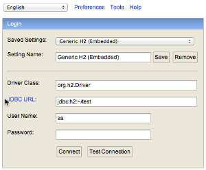
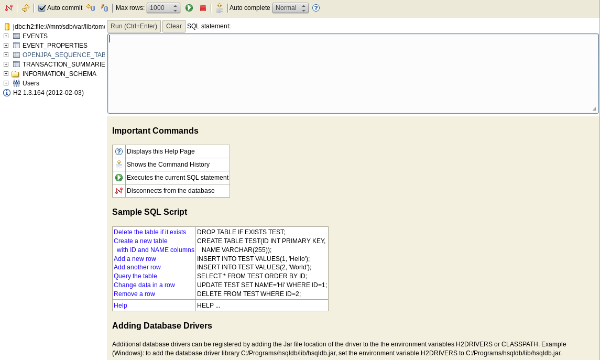
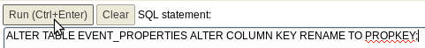
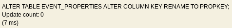

Migration Scripts for Business Events in MMC 3.5.0
MMC 3.5.0 introduced changes to one of the tables where Business Events information is stored. These changes affect tables in the following databases:
-
Any external database except MS SQL Server used with MMC 3.4.2
-
MMC’s internal H2 database, where Business Events data is tracked by default
When upgrading to MMC 3.5.0, you need to run Business Events data migration scripts if:
-
You are persisting Business Events data on any external database except MS SQL Server with MMC 3.4.2
-
You are persisting Business Events data on MMC’s H2 internal database (default)
You do NOT need to run the migration scripts if:
-
Your current MMC version is 3.4.2 and you are persisting Business Events data on MS SQL Server
Running the Migration Script in H2 (MMC Default Database)
By default, MMC persists Business Events database on an internal H2 database. If you have not modified this configuration, when upgrading to MMC 3.5.0 you will need to run the Business Events migration script for H2 as described in this section.
Additionally, if you are upgrading from MMC 3.4.1 or earlier, you can optionally run a second script to drop tables that are no longer used in 3.5.0.
H2 Migration Script
| You must run this script while your current MMC is not running, and before running MMC 3.5.0 for the first time. |
The script consists of a single SQL statement:
To run the script, follow these steps:
-
Shut down MMC.
-
Find the H2 JAR file in the
<MMC_HOME>/WEB-INF/libdirectory. The file is namedh2-<version>.jar, for exampleh2-1.3.164.jar. -
From the command line, run the H2 JAR with the following command:
java -jar h2-<version>.jarYou must run the JAR file as a user with write permissions on the mmc-datadirectory.This will fire up your O.S.'s default Web browser with the Web client for H2, which displays the below configuration screen.
 -
For Driver Class, enter
org.h2.Driver. -
For JDBC URL, enter
jdbc:h2:file:///<path_to_mmc-data>/tracking/persistency, replacing<path_to_mmc-data>with the actual path to the directory containing your MMC tracking database. For example,jdbc:h2:file:/var/lib/tomcat6/webapps/persistency(the path ends inpersistency, with no filename extension). -
Leave User Name and Password blank.
-
Click Connect. The H2 Web client should display the window shown below.
 -
Type the SQL statement for Business Events migration into the empty field, then click Run.
 -
H2 will run the SQL statement, then print a success message:
 -
Optionally, run the script to drop indexes.
-
Disconnect the H2 Web client by clicking the disconnect button, usually the first in the toolbar at the top left corner of the screen.
-
Exit the H2 client Web interface.
-
Kill the H2 client by pressing Control-C on the terminal where you launched it.
-
Start MMC.
H2 Optional Drop Indexes Script
If upgrading from MMC 3.4.1 or earlier, you can optionally run a script to drop database indexes that are no longer used in MMC 3.5.0. Run this script from the H2 Web client described in H2 Migration Script, after running the migration script. The script to drop indexes is provided below.
DROP INDEX IF EXISTS e_properties_value;
DROP INDEX IF EXISTS e_flow_name;
DROP INDEX IF EXISTS e_message_id;
DROP INDEX IF EXISTS e_server_id;
DROP INDEX IF EXISTS e_server_name;
DROP INDEX IF EXISTS e_timestamp;
DROP INDEX IF EXISTS e_type;
DROP INDEX IF EXISTS events_name;
DROP INDEX IF EXISTS t_s_processing_time;
DROP INDEX IF EXISTS t_s_status_ordinal;After running the script, see steps 12, 13 and 14 in H2 Migration Script to exit the H2 Web client and shut down the H2 JAR.
Running the Migration Script on External Databases
Regardless of the external database used, in all cases the instructions are the same:
-
Ensure that you run the migration script before running the new version of MMC for the first time.
-
Shut down the old version of MMC if it is running.
-
Use a database client to run the script on the target database.
-
If upgrading from MMC 3.4.1 or earlier, optionally run an additional script to drop indexes not used in 3.5.0.
-
Disconnect the database client.
-
Launch the new version of MMC.
See the sections below for the script for each supported database.
Oracle
Migration Script
ALTER TABLE EVENT_PROPERTIES RENAME COLUMN KEY to PROPKEY;Optional Drop Indexes Script
Optionally run this script if upgrading from MMC 3.4.1 or earlier.
DROP INDEX e_properties_value;
DROP INDEX e_flow_name;
DROP INDEX e_message_id;
DROP INDEX e_server_id;
DROP INDEX e_server_name;
DROP INDEX e_timestamp;
DROP INDEX e_type;
DROP INDEX events_name;
DROP INDEX t_s_processing_time;
DROP INDEX t_s_status_ordinal;Postgres
Migration Script
ALTER TABLE EVENT_PROPERTIES RENAME COLUMN KEY to PROPKEY;Optional Drop Indexes Script
Optionally run this script if upgrading from MMC 3.4.1 or earlier.
DROP INDEX IF EXISTS e_properties_value;
DROP INDEX IF EXISTS e_flow_name;
DROP INDEX IF EXISTS e_message_id;
DROP INDEX IF EXISTS e_server_id;
DROP INDEX IF EXISTS e_server_name;
DROP INDEX IF EXISTS e_timestamp;
DROP INDEX IF EXISTS e_type;
DROP INDEX IF EXISTS events_name;
DROP INDEX IF EXISTS t_s_processing_time;
DROP INDEX IF EXISTS t_s_status_ordinal;MySQL
Migration Script
Replace <db_name> with the name of the target database.
USE <db_name>;
ALTER TABLE EVENT_PROPERTIES CHANGE KEY0 PROPKEY varchar(30);Optional Drop Indexes Script
Optionally run this script if upgrading from MMC 3.4.1 or earlier.
Replace <db_name> with the name of the target database.
USE <db_name>;
DROP INDEX e_properties_value ON EVENT_PROPERTIES;
DROP INDEX e_flow_name ON EVENTS;
DROP INDEX e_message_id ON EVENTS;
DROP INDEX e_server_id ON EVENTS;
DROP INDEX e_server_name ON EVENTS;
DROP INDEX e_timestamp ON EVENTS;
DROP INDEX e_type ON EVENTS;
DROP INDEX events_name ON EVENTS;
DROP INDEX t_s_processing_time ON TRANSACTION_SUMMARIES;
DROP INDEX t_s_status_ordinal ON TRANSACTION_SUMMARIES;MS SQL Server
Migration Script
You only need to run this script if using MMC 3.4.1 for MS SQL Server.
Replace <db_name> with the name of the target database.
USE <db_name>
GO
CREATE TABLE [dbo].[OPENJPA_SEQUENCE_TABLE](
[ID] [tinyint] NOT NULL,
[SEQUENCE_VALUE] [bigint] NULL,
PRIMARY KEY CLUSTERED
(
[ID] ASC
)WITH (PAD_INDEX = OFF, STATISTICS_NORECOMPUTE = OFF, IGNORE_DUP_KEY = OFF, ALLOW_ROW_LOCKS = ON, ALLOW_PAGE_LOCKS = ON) ON [PRIMARY]
) ON [PRIMARY]
GO
INSERT INTO [dbo].[OPENJPA_SEQUENCE_TABLE]
SELECT 0, SEQUENCE_VALUE FROM [dbo].[OPENJPA_SEQUENCES_TABLE] WHERE ID = 'EVENTS'
GO
/* VERIFY SEQUENCE_VALUE IN OPENJPA_SEQUENCE_TABLE IS THE SAME AS SEQUENCE_VALUE IN OPENJPA_SEQUENCES_VALUE */
/* THEN DROP OLD TABLE */
DROP TABLE [dbo].[OPENJPA_SEQUENCES_TABLE]
GOOptional Drop Indexes Script
Replace <db_name> with the name of the target database.
USE [enter_db_name_here]
DROP INDEX [EVENT_PROPERTIES].[e_properties_value]
GO
DROP INDEX [EVENTS].[e_flow_name]
GO
DROP INDEX [EVENTS].[e_message_id]
GO
DROP INDEX [EVENTS].[e_server_id]
GO
DROP INDEX [EVENTS].[e_server_name]
GO
DROP INDEX [EVENTS].[e_timestamp]
GO
DROP INDEX [EVENTS].[e_type]
GO
DROP INDEX [EVENTS].[events_name]
GO
DROP INDEX [TRANSACTION_SUMMARIES].[t_s_processing_time]
GO
DROP INDEX [TRANSACTION_SUMMARIES].[t_s_status_ordinal]
GO